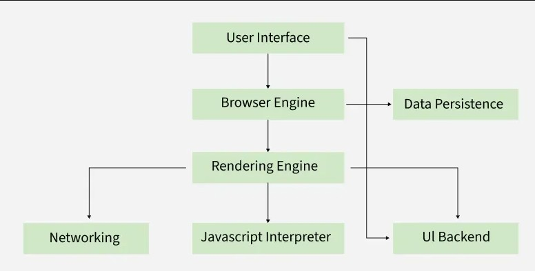

Browsers work by fetching web pages from the internet, parsing HTML and CSS, and rendering the content on the screen.
When the user enters a URL/IP address the browser then sends a request to the webserver that hosts the website.
The webserver then responds with the requested web page, which the browser then parses and renders on the screen.
Through the use of HTML and CSS, the browser can display the content in a user-friendly way.
The browser uses the Domain Name System (DNS) to resolve the domain name into an IP address, then establishes a TCP connection to the webserver on port 80 (HTTP) or 443 (HTTPS).
The TCP handshake is a process that establishes a connection between the browser and web server. In this process there are essentially 3 messages sent and recieved through the server and browser to establish a connection. The first message is a SYN (synchronize) packet sent from the browser to the server, the second is a SYN-ACK (synchronize-acknowledge) packet sent from the server to the browser, and the third is an ACK (acknowledge) packet sent from the browser to the server. (https://developer.mozilla.org/en-US/docs/Web/Performance/Guides/How_browsers_work)